Lecture 09: Scaling Laws 1
TL;DR * Scaling laws describe how model performance (loss) changes with resources (data, model size, compute) in a predictable, often log-linear, fashion. * Historically, scaling laws were studied in statistical learning theory (generalization bounds) and early NLP (data scaling for task performance). * Modern scaling laws for LLMs show power-law relationships between test loss and compute, dataset size, or parameters. * These laws enable efficient engineering decisions: predicting optimal hyperparameters, architectures, and resource allocation (e.g., data vs. model size) without expensive large-scale training. * Key insights include the existence of distinct scaling regions (small data, power-law, irreducible error) and the importance of accounting for factors like data composition, repetition, and specific parameter types (e.g., embeddings). * While powerful for pre-training objectives (like perplexity), scaling law predictability can be less reliable for downstream tasks.
Key Concepts * Scaling Laws * Data Scaling * Model Scaling * Compute Scaling * Power-Law Relationships * Log-Log Plots * Generalization Error * Irreducible Error * Small Data Region * Power-Law Region * Data Composition * Data Repetition * Isotropes / IsoFLOPs * Optimal Training Budget * Critical Batch Size * Scale-Aware Initialization (muP) * Downstream Scaling
[0:00] Introduction to Scaling Laws
The lecture begins by setting a scenario: imagine you have access to 100,000 H100 GPUs for a month and need to build the best open-source Large Language Model (LLM). We've already covered infrastructure, distributed training, pre-training datasets, and architectures. The question then becomes: how do you make optimal decisions regarding architecture, hyperparameters, and resource allocation to push the frontiers of model performance, rather than just copying existing models?
This is where scaling laws come in. * Goal: Build simple, predictive "laws" for the behavior of language models. * Approach: Train small models, learn from their behavior, and extrapolate to larger ones. * Old (unpleasant) way: Tune hyperparameters directly on big models, which is computationally expensive. * New (optimistic) way: Tune on small models, extrapolate to large ones, saving significant compute.
The lecture will cover: 1. History and background of scaling laws: Contextualizing their origins beyond recent "AGI" hype. 2. Neural (LLM) scaling behaviors: Empirical results and practical applications.
[0:05] Part 1. Scaling Laws: History and Background
The speaker emphasizes that scaling laws are more grounded than often portrayed, with a rich history.
[0:05] Data Scaling as Empirical Sample Complexities
From a statistical machine learning perspective, scaling laws describe how model behavior changes with increased data or model size.
-
Theoretical Generalization Bounds:
- For learning in a finite set of $k$ hypotheses, the generalization error $\epsilon(\hat{h})$ is bounded by: $$ \epsilon(\hat{h}) \le (\min_{h \in H} \epsilon(h)) + 2\sqrt{\frac{1}{m} \log \frac{2k}{\delta}} $$ This suggests error should scale as $1/\sqrt{m}$ (where $m$ is the number of samples).
- For generative modeling (e.g., fitting a smooth density), the $L_2$ error can be bounded by a polynomial in $n$ (number of samples): $$ \sup_{p \in \mathcal{P}_{\beta, L}} E[(\hat{p}_n(x_0) - p(x_0))^2] \le C n^{-\frac{\beta}{2\beta+1}} $$ These are theoretical upper bounds, not actual realized loss values.
-
The Leap to Empirical Scaling Laws: Moving from theoretical bounds to empirically observed performance trends.
[0:05] Earliest (Data) Scaling Law Paper - 1993
The earliest paper that resembles modern scaling law analysis is "Learning Curves: Asymptotic Values and Rate of Convergence" from 1993 by Corinna Cortes, L.D. Jackel, Sara A. Solla, Vladimir Vapnik, and John S. Denker (Bell Labs).
- Key Idea: Training classifiers on large datasets is computationally demanding. We need predictive methods to estimate model performance without full training.
- Functional Form: The paper proposes that test error ($E$) can be expressed as: $$ E = A + \frac{B}{\text{train-data-size}^\beta} $$ where $A$ is irreducible error, and $B/\text{train-data-size}^\beta$ is a polynomially decaying term.
- Methodology: They trained small models, fit curves, and accurately predicted performance for larger models. This is precisely the spirit of modern scaling laws.
[0:05] Early History of Scaling Laws - Data Scaling
Other early works also explored data scaling. * Log-linear scaling with data (Banko and Brill, 2001): Studied how NLP system performance scales with data size. * Observation: Log-linear relationship between data size (x-axis, log scale) and test accuracy (y-axis). * Conclusion: Dramatic performance improvements can be achieved by scaling data. This led to the argument that collecting more data might be more effective than complex algorithm development, a sentiment echoed in modern pre-training.
[0:05] Early Tests of Functional Forms
Even in the early 2010s, researchers were investigating the best functional forms for these scaling relationships. * Kolachina et al. (2012): Tested various functional forms (e.g., exponential, power-law) to predict model behavior based on training data size. * Key Relationship: Model capabilities (y-axis) as a function of data (x-axis).
[0:05] Earliest Large-Scale Neural Scaling Work: Hestness et al. 2017
This paper from Baidu (Hestness et al., 2017) is often cited as the earliest large-scale neural scaling work. * Observation: For tasks like machine translation, speech, and vision, error rates fall as a power law with increasing data. * Generalization Error Curve: The paper proposes a conceptual curve for generalization error vs. training data size, identifying three regions: 1. Small Data Region: Initial phase where performance is close to random guessing ("Best Guess Error"). 2. Power-Law Region: Predictable scaling where error decreases polynomially with data ("Power-Law"). 3. Irreducible Error Region: Asymptotic phase where error approaches the fundamental limit of the task ("Irreducible Error").
[0:05] Hestness II: Ahead of its Time
The Hestness et al. (2017) paper also foreshadowed many "new" phenomena discussed in recent years: * "Emergence": Noted that small data regimes can be hard to predict because models might suddenly "leave the random region" and show significant improvements. * Scaling by Compute: Highlighted that if scaling laws are predictable, then scaling by compute (training larger models for longer) becomes a crucial strategy. * Speed = Accuracy Trade-off: Suggested that hardware improvements (e.g., quantization) and distributed training could be used to improve compute throughput, allowing for larger models and better accuracy.
[0:05] Part 2. Neural (LLM) Scaling Behaviors
This section delves into empirical scaling behaviors of LLMs, focusing on data, model size, and hyperparameters.
[0:05] Data vs. Performance
What is a data scaling law? * A simple formula that maps dataset size ($n$) to error. * Expectation: Monotonic, logistic-like curves for generalization error (log-scale) vs. training data set size (log-scale), with distinct regions (small data, power-law, irreducible error).
Scaling laws hold on many different kinds of phenomena! * Kaplan et al. (2020): Showed log-linear relationships between test loss and: * Compute (PF-days) * Dataset Size (tokens) * Parameters (non-embedding) * These relationships hold even in non-standard settings (e.g., when training and test data are different).
[0:05] Conceptual Foundations of Data Scaling Laws
Q: Why do scaling laws show up? * We expect error to be monotonic (more data = less error). * Q: But why is it a power law / linear in log-log? * A: Estimation error naturally decays polynomially.
Toy Example: Mean Estimation * Input: $x_1, \dots, x_n \sim N(\mu, \sigma^2)$ * Task: Estimate the average, $\hat{\mu} = \frac{1}{n} \sum x_i$. * Error: The expected squared error is $E[(\hat{\mu} - \mu)^2] = \frac{\sigma^2}{n}$. * This is a "scaling law": Taking the logarithm of both sides: $$ \log(\text{Error}) = -\log n + 2 \log \sigma $$ This shows a linear relationship in log-log space with a slope of -1. * Generalization: Any polynomial rate $1/n^\alpha$ is a scaling law.
Detour: Scaling Laws for (Nonparametric) Learning * Neural nets can approximate arbitrary functions. Let's consider estimating a function $f(x)$ where $x_i$ are uniformly distributed in a 2D unit box, and $y_i = f(x_i) + N(0,1)$. * Approach: Cut the 2D space into boxes of length $n^{-1/4}$. * Estimation Error: Informally, we have $\sqrt{n}$ boxes, each getting $\sqrt{n}$ samples. The error is approximately $1/\sqrt{n}$ (plus other smoothness terms). * In d-dimensions: This becomes Error $\approx n^{-1/d}$. * Meaning: Scaling means $\log(\text{Error}) = -\frac{1}{d} \log n + C$. * Takeaway: "Nonparametric" learning has dimension-dependent scaling. The slope of the scaling law is related to the intrinsic dimensionality of the data.
Scaling Law Exponents: An Intriguing Mystery * We expect "nice round numbers" for the slope (e.g., -1 or -0.5) based on simple models. * Empirical Findings: * Machine Translation (Hestness et al.): -0.13 * Speech (Hestness et al.): -0.3 * Language Modeling (Kaplan et al.): -0.095 * These exponents are much slower than expected. This suggests that the "effective" dimensionality of the learning problem for neural networks is very high.
Intrinsic Dimensionality Theory of Data Scaling Laws * Argument (Bahri 2021): 1. Scaling laws arise due to polynomial rates of learning $1/n^\alpha$. 2. Scaling argument $\alpha$ is closely connected to the intrinsic dimensionality of the data. * Caveat: Estimators of intrinsic dimension are sketchy, and this is not airtight.
[0:05] Other Data Scaling Laws
Data scaling laws are useful for making engineering decisions. * Related Question: How does dataset composition affect performance? * Kaplan et al. showed that data composition affects the offset of the scaling law, not the slope. * Implication: To pick an optimal data mixture, you can run experiments on small models and extrapolate. * Example: Optimal data mixture can be found by analyzing the shape of expected error as a function of data source proportion.
-
Scaling Laws Under Data Repetition
- Question: In practice, we have finite data. How does repeating examples affect scaling?
- Observation: Return on compute when repeating data diminishes rapidly after a few epochs (e.g., 4 epochs).
- Modified Scaling Law: $D' = U_D + U_D R_D (1 - e^{-R_D/U_D})$, where $D'$ is effective data, $U_D$ is unique tokens, and $R_D$ is repetition.
- Implication: There's an effective sample size, and after about 4 epochs, you get rapidly diminishing returns from repeating data.
-
Data Selection Scaling and Accounting for Finiteness
- Problem: Given that repeated data is less valuable, data selection should be adaptive to scale.
- Approach: Use scaling laws to trade off between repeating high-quality data and including new, lower-quality data.
- Example (CMU folks): Showed how to balance quality with repetition rate using scaling laws.
Recap: Data Scaling Laws * Remarkably linear relationship between log-data size and log-error. * Holds across domains and models. * Theory understanding: Similar to generalization bounds (mean estimation example). * Applications: Data collection / curation.
[0:05] Scaling Laws for Model Engineering
Now, let's shift to model scaling, which is often more mysterious.
Our Motivation: How can we efficiently design huge LLMs? * Choices: LSTMs vs. Transformers, Adam vs. SGD, etc. * Resource Allocation: How should we allocate limited resources? * Train models longer vs. train bigger models? * Collect more data vs. get more GPUs? * Scaling laws provide a simple procedure to answer these questions.
[0:05] Hyperparameter Questions
We'll consider some of these choices in the context of the classic Kaplan scaling paper. 1. Architecture 2. Optimizer 3. Aspect ratio / depth 4. Batch size
1. Architecture: Transformers vs. LSTMs * Q: Are transformers better than LSTMs? * Brute force way: Spend tens of millions to train an LSTM GPT-3. * Scaling law way: Train LSTMs and Transformers across various compute levels. * Observation: Transformers consistently outperform LSTMs with a constant factor gap in compute efficiency (e.g., 15x more efficient). This gap holds across different numbers of layers.
Many Architectures (Tay et al.) * Cross-architecture scaling (Tay et al., Google): Compared many architectures (ALBERT, DConv, Funnel, Transformer-GLU, LCconv, MLP Mixer, MoS Transformer, Switch Transformer, Universal Transformer) against a Transformer baseline. * Method: Scaled each architecture across different FLOPs budgets and plotted negative log-perplexity. * Observation: Only architectures like Gated Linear Units (GLU) and Mixture of Experts (MoE) (e.g., Switch Transformer) consistently beat the Transformer baseline. This provides evidence for which architectures are worth scaling up.
2. Optimizer Choice * Q: What about Adam vs. SGD? * Hestness et al. (2017): Compared SGD and Adam for Recurrent Highway Networks (RHNs, pre-transformers). * Observation: Similar to architecture choice, there's a constant factor gap in compute effectiveness between Adam and SGD. The slopes of the scaling curves are similar, but Adam provides a better offset (lower loss for the same compute).
3. Depth/Width: Number of Layers * Q: Does depth or width make a huge difference? * Kaplan et al. analysis shows that while 1 layer performs significantly worse, models with 2 or more layers have diminishing returns beyond $10^7$ parameters. * Insight: There's a wide basin of approximately optimal depth/width ratios, rather than a sharp optimal point.
Depth/Width: But not all parameters are made equal * Observation: Embedding layer parameters don't behave the same as non-embedding parameters. * If embedding parameters are included in the total parameter count, the scaling law becomes distorted (bends over). * If only non-embedding parameters are considered, the scaling law is much cleaner. * Related Work: Recent papers on scaling laws for mixtures of experts also explore how different types of parameters contribute to scaling.
Do hyperparameters and other Transformer layers scale equally? * Kaplan et al. also analyzed the impact of aspect ratios (Feed-Forward Ratio, Attention Head Dimension) on performance. * Observation: The shape of the loss curve (loss increase vs. aspect ratio) remains similar across different model sizes (50M, 274M, 1.5B parameters). * Implication: You can tune aspect ratios on small models, and the optimal range will likely transfer to larger models. This highlights the importance of being "scale-aware" in hyperparameter tuning.
4. Batch Size: Critical Batch Size * Batch size is known to have strong diminishing returns past a certain point. * Critical batch size: The minimum number of examples for target loss / minimum number of steps for target loss. * Perfect Scaling: When batch size is smaller than the noise scale, increasing batch size is almost equivalent to taking more gradient steps. This is desirable for parallel processing. * Ineffective Scaling: Past the critical batch size, increasing batch size no longer effectively reduces noise, as it's dominated by the curvature of the optimization landscape. * Empirical Analysis: The critical batch size can be estimated empirically. * Observation: As the loss target gets smaller (better performance), the critical batch size tends to get larger. * Practical Implication: Training reports (e.g., Llama 3) often show increasing batch size during training as loss decreases.
Batch Size: Selecting the Optimal Batch * Q: As we increase both compute and model size, how should we scale training? * Kaplan et al. analysis shows that for a given compute budget, the number of total steps can remain relatively constant while batch sizes increase. * Good news for data parallel processing: This allows for efficient scaling of training.
5. Learning Rates: muP and Scale-Aware LR Choices * Problem: If we naively scale up, the optimal learning rate depends on scale. * Standard Practice (left plot): As model width increases, the optimal learning rate shifts to the left (smaller values). * Solution: We need scale-aware initialization and learning rate scaling. * muP (Maximal Update Parametrization): A reparameterization of the model where learning rates are scaled based on model width and other factors (e.g., variance of initialization, output multipliers). * Our Work (right plot): With muP, the optimal learning rate remains stable across different model widths. * Implication: Tune learning rate once on a small model, and it directly transfers to the largest scale. * Industry Adoption: Labs (e.g., Meta's "MetaP" for Llama 4) are adopting similar ideas to simplify scaling.
[0:05] Caution - Scaling Behaviors Can Differ Downstream
- Observation: Scaling is predictable and depends mainly on parameters.
- Catch: Downstream scaling can often be much less predictable.
- Tay et al. (2023):
- Left Plot (Pre-training): Negative log-perplexity (pre-training loss) shows a very clean log-linear relationship with parameters (a surrogate for compute). This means architecture and hyperparameter choices don't significantly alter the fundamental scaling.
- Right Plot (Downstream): SuperGLUE accuracy (downstream task) shows a much less predictable relationship with parameters. Different architectures and hyperparameters lead to widely varying performance, and the log-linear trend is not as clear.
- Implication: Don't assume pre-training scaling directly translates to downstream task performance. Be cautious when extrapolating.
- Example: State-space models (e.g., Mamba) show excellent pre-training scaling but may perform differently on specific in-context learning or QA tasks.
[0:05] Some Surprising Takeaways
- The effect of hyperparameters on big LLMs can be predicted before training!
- Optimizer choice
- Model depth
- Architecture choice
- The scaling law based design procedure:
- Train a few smaller models (spanning a couple orders of magnitude compute).
- Establish a scaling law (e.g., ADAM vs SGD scaling law).
- Select optimal hyperparameters based on the scaling law prediction.
- In many cases, scaling laws won't vary much (slopes will be similar), meaning small model results transfer surprisingly well to larger models.
[0:05] One Important Use of Scaling Laws
Q: Do we need more data or bigger models? * Context: Historically, compute was the limiting resource, not data. The question was how to optimally spend a fixed FLOPs budget. * Joint Data-Model Scaling Laws: Describe how data and model size relate to error. * Rosenfeld et al. (2020) & Kaplan et al. (2020): Proposed functional forms where error is a sum of terms decaying polynomially with data ($n^{-\alpha}$) and model size ($m^{-\beta}$), plus an irreducible error term ($C$). * $$ \text{Error} = n^{-\alpha} + m^{-\beta} + C $$ (Rosenfeld et al.) * $$ \text{Error} = [m^{-\alpha} + n^{-1}]^\beta $$ (Kaplan et al.) * These functional forms, while somewhat ad-hoc, provide surprisingly good fits to the observed data-model joint error landscape.
Model-Data Joint Scaling is Accurate * Rosenfeld et al. demonstrated that by fitting scaling exponents on small data and small models, they could accurately predict the performance of much larger models and datasets. * Method: Train models on a small subset of the data-model space (e.g., small models, small data), fit the joint scaling law, and extrapolate to predict performance for larger models and datasets. * Accuracy: The predictions (y-axis) closely match the real values (x-axis) for both ImageNet and WikiText-103, showing high accuracy of joint extrapolation. * Implication: This allows trading off data and model size to optimize $n^{-\alpha} + m^{-\beta} + C$ with your costs.
[0:05] Compute Tradeoffs
- Q: What about other resources? Compute vs. performance?
- For a fixed compute budget: Is a big model that's undertrained better than a small model that's well-trained?
- Kaplan et al. (2020) & Brown et al. (2020): Showed that for a fixed compute budget (FLOPs), there's an optimal balance between model size and training data.
- Observation: Plotting test loss vs. parameters (x-axis) for different compute budgets (colors), the minimum loss for each compute budget forms a scaling law.
- Scaling laws let us navigate this tradeoff.
[0:05] Caution - 'Optimal' Scaling Laws Are Hard to Get
- Problem: Rosenfeld and Kaplan both predict the relationship of data, model, and performance. However, their initial estimates for optimal scaling were quite different.
- Chinchilla (Hoffmann et al., 2022): Argued that previous fits were quite off.
- Kaplan et al. (2020) predicted an optimal ratio of ~2 tokens per parameter.
- Chinchilla found the optimal ratio to be ~20 tokens per parameter, a 10x difference.
- Gopher (Rae et al., 2021) and Megatron-Turing NLG (Narayanan et al., 2021) also had ratios closer to Kaplan's initial estimate.
- Implication: Precisely determining the "optimal" scaling laws is challenging and sensitive to methodology.
Main Difference - Accounting for LR Schedules * One key reason for the discrepancy between Kaplan's and Chinchilla's estimates lies in how they accounted for learning rate schedules. * Cosine Learning Rate Schedules: Models are typically trained with cosine learning rate schedules, which involve a warm-up phase, a decay phase, and a cool-down phase. * Problem: You cannot truncate a cosine learning rate schedule early and expect the same model quality as a full run. A model trained for a shorter duration with a truncated schedule is not equivalent to a model trained from scratch with a schedule designed for that shorter duration. * Kaplan's Approach: Assumed that truncating training runs (and thus the learning rate schedule) was equivalent to training a smaller model for a shorter time. This assumption was flawed. * Chinchilla's Approach: Accounted for the full cosine learning rate schedule, ensuring that models were trained to convergence for each data/model size combination.
Chinchilla in Depth - 3 Methods Chinchilla authors suggested 3 ways of fitting scaling laws, which mostly (minus method 3) suggest similar constants.
-
Minimum over training runs (Method 1):
- Approach: Overlay training curves for various model sizes and compute budgets. Identify the "lower envelope" of these curves, representing the minimum loss achievable for a given FLOPs budget.
- Observation: The minimum over the union of all training curves is a power law.
- Result: This method yields optimal parameter-to-FLOPs and token-to-FLOPs ratios that are consistent with 0.5 for both coefficients ($N_{opt} \propto C^a$, $D_{opt} \propto C^b$).
-
IsoFLOPs (Method 2):
- Approach: Pick a range of FLOPs budgets. For each budget, vary the total parameter count and take the minimum loss over these convex shapes (IsoFLOP curves).
- Observation: The minima form a power law.
- Result: This method also yields optimal parameter-to-FLOPs and token-to-FLOPs ratios consistent with 0.5. This is considered conceptually straightforward.
-
Joint Fits (Method 3):
- Approach: Run a bunch of models on the size-data grid. Use least squares to fit a joint scaling law (like the Rosenfeld/Kaplan functional forms).
- Observation: This method is messier and yields different coefficients (e.g., 0.73 for $a$ and 0.27 for $b$ in Kaplan's initial work).
Fun Addendum - Errors in Chinchilla Method 3 * Discovery: Some authors (Besiroglu et al., 2024) later found that Method 3 in the original Chinchilla paper was likely flawed. * Process: They performed data forensics, recovered the raw data, and re-did the fit. * Result: The re-fit yielded results more consistent with Methods 1 and 2. The original fit had non-zero mean residuals, indicating a biased fit. Correcting this bias brought Method 3's estimates in line with the other two methods. * Conclusion: The original authors had both the idea and the data right, but a minor error in curve fitting led to a misleading result.
[0:05] Important Note - Train-Optimal May Not Be What You Want
- Chinchilla's Aim: To tell you what gives the best model for fixed training compute.
- Reality: Most of the compute in a real deployment is inference.
- Implication: We should "over-train" (train with more tokens per parameter than what Chinchilla suggests for training optimality).
- Trend: Over time, the tokens per parameter ratio has steadily increased:
- GPT-3: 2 tokens / param
- Chinchilla: 20 tokens / param
- LLaMA 65B: 22 tokens / param
- Llama 2 70B: 29 tokens / param
- Mistral 7B: 110 tokens / param
- Llama 3 70B: 215 tokens / param
- Reason: The more usage we expect, the more it becomes worth it to pay the upfront cost of training with more data to get a better model, rather than incurring higher ongoing inference costs for a less capable model.
[0:05] Recent Example for Different (Diffusion) Models
- Observation: Methods like IsoFLOPs are pretty easy to execute, and our group has replicated these results.
- Gulrajani+ (2023): Applied IsoFLOP analysis to auto-regressive and diffusion models for text.
- Auto-regressive models: Showed the familiar chinchilla-like curves and optimal scaling.
- Diffusion models: Despite being a totally different generative model, they also show very similar curves and predictable scaling.
- Conclusion: Plotting the minimum across these shows predictable scaling for both, separated by a constant offset.
- Takeaway: Scaling laws are not just for cherry-picked examples; they seem to happen pretty naturally as you work on new models or environments.
[0:05] Scaling Laws for Models and Compute
- Log-linearity extends to model parameters and compute!
- Lets us set the following based on small models:
- Pick optimizer
- Pick architecture and model sizes
- Also lets us make smart resource tradeoffs:
- Big models vs. more data?
[0:05] Recap: Scaling Laws - Surprising and Useful!
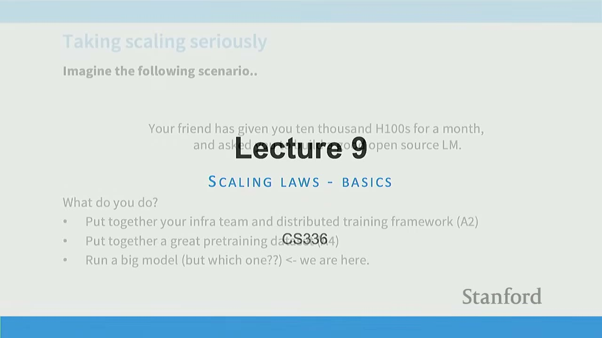
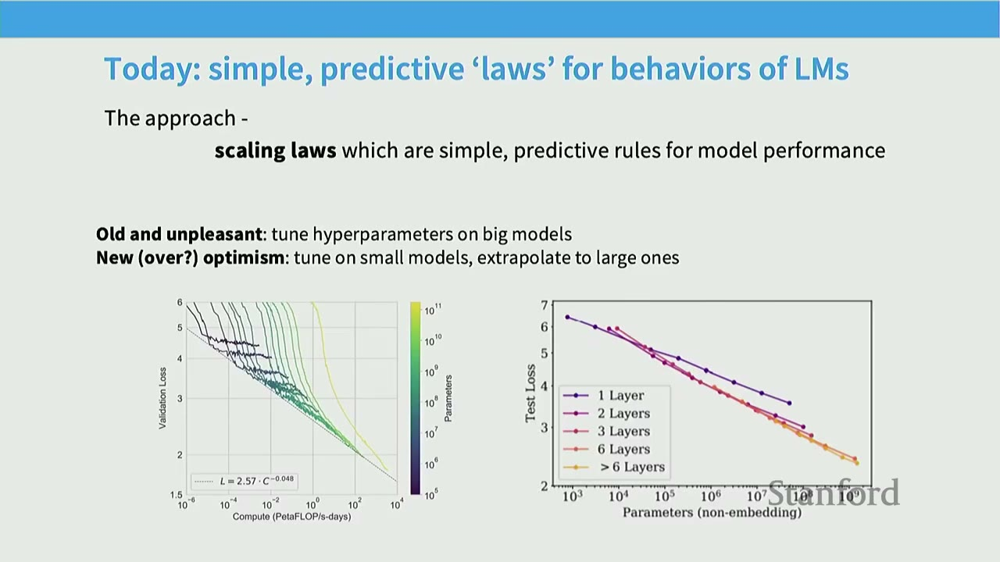
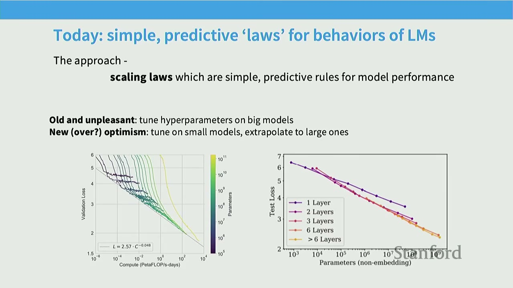
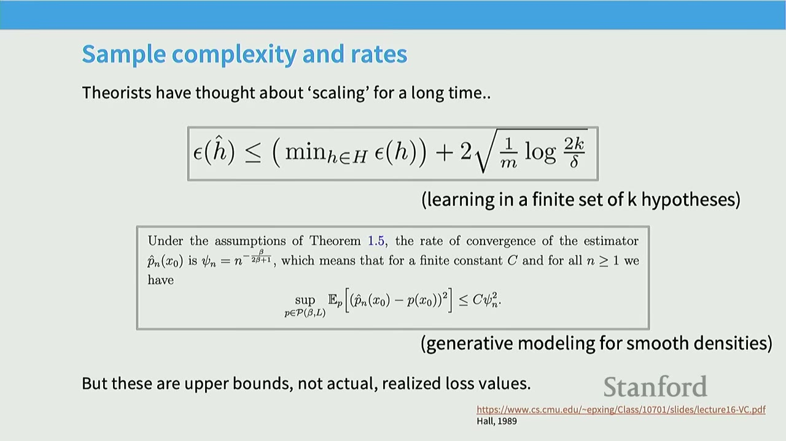
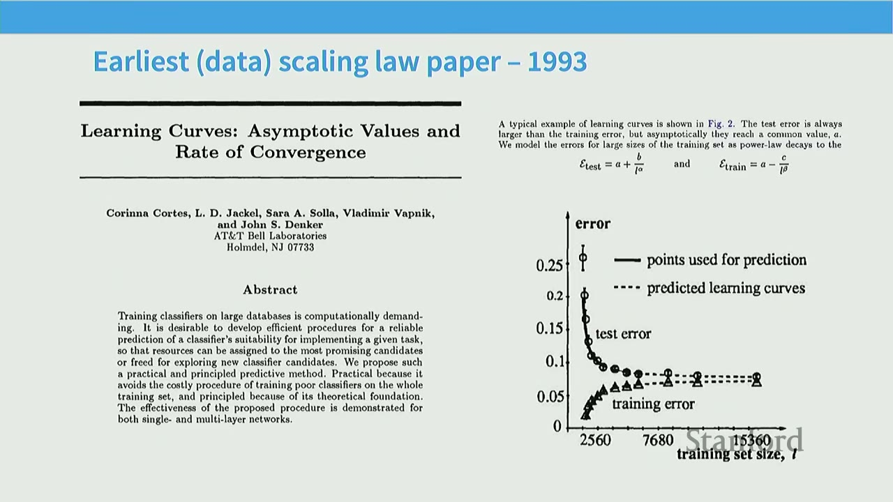
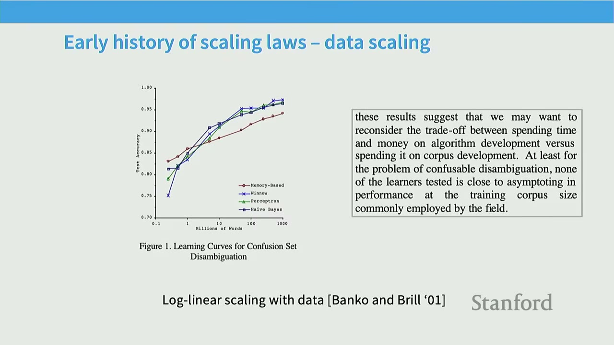
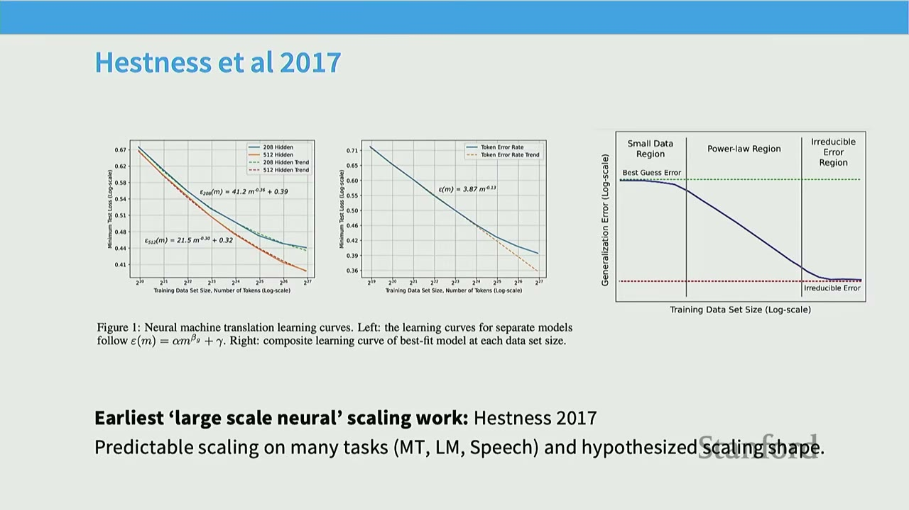
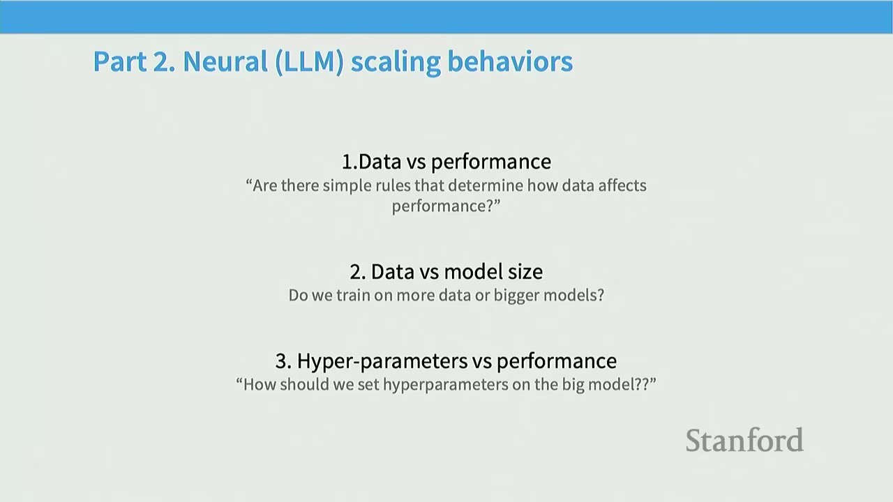
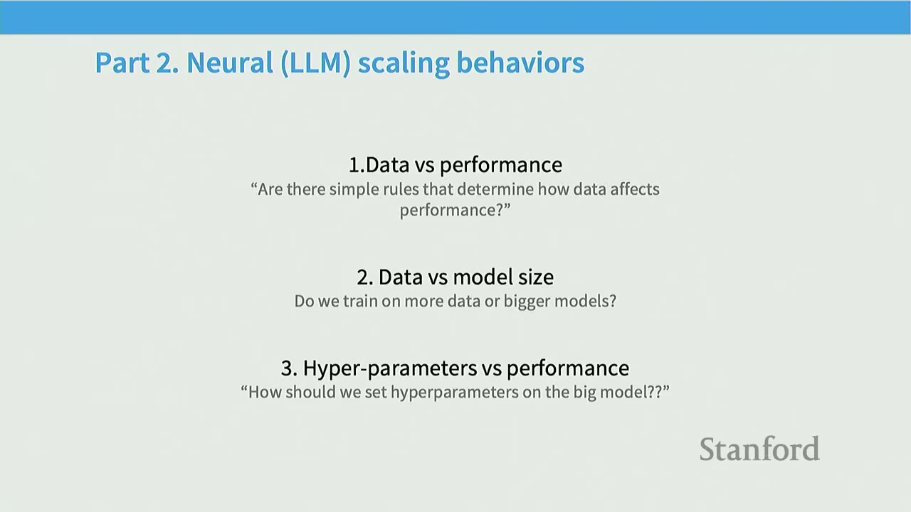
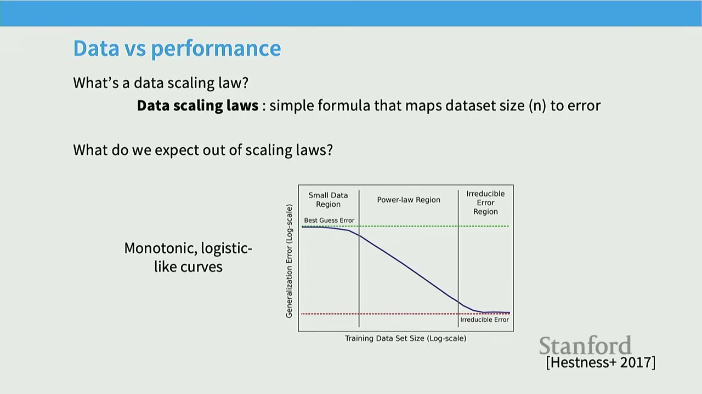
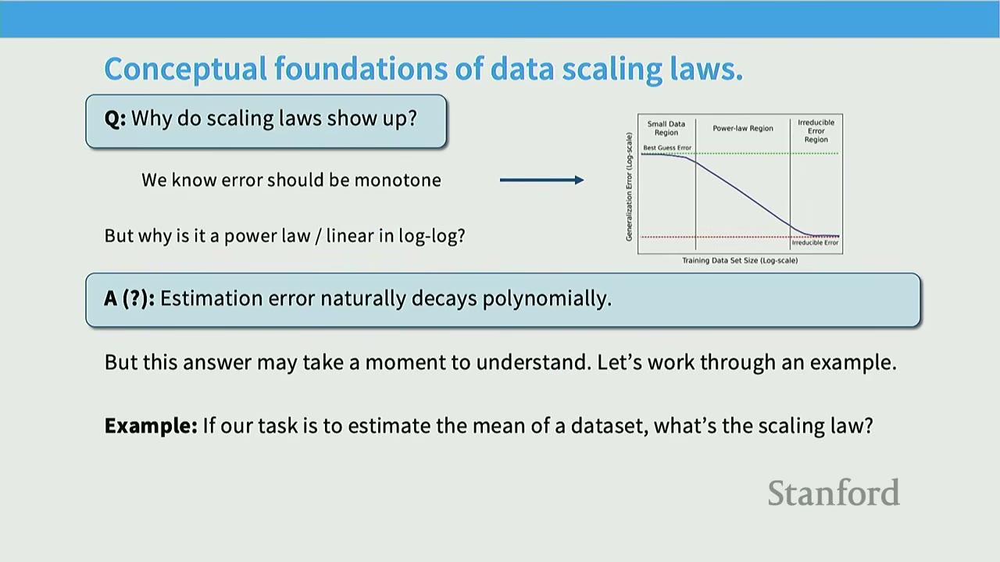
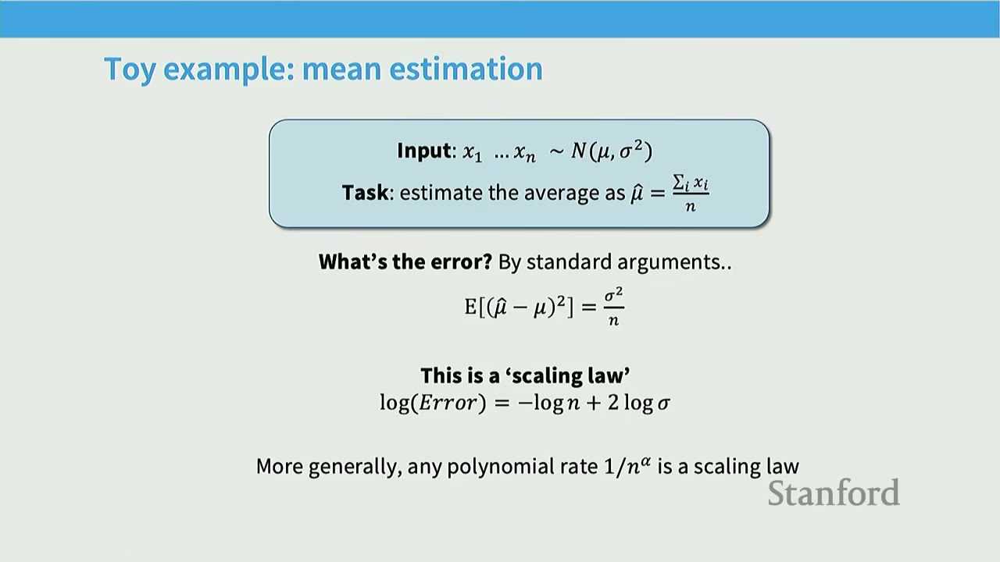
- Data scaling: Understand how data affects models, clean theory.
- Model scaling: Dramatically reduce costs for training.
- Scaling as prediction: Understand what problems can be 'brute forced'.
Practical Takeaways
- Efficiency: Scaling laws provide a principled way to make engineering decisions (architecture, hyperparameters, resource allocation) for large models without needing to train them fully.
- Predictability: Many aspects of model performance (loss) exhibit predictable power-law relationships with resources (data, parameters, compute) on log-log scales.
- Resource Allocation: Scaling laws help optimize the trade-off between model size, dataset size, and compute budget to achieve the best performance for a given cost.
- Architecture/Optimizer Choice: Small-scale scaling experiments can reveal which architectures or optimizers are fundamentally more efficient, even if the absolute performance is low.
- Hyperparameter Tuning: Scale-aware initialization (like muP) can make optimal learning rates stable across different model scales, simplifying tuning.
- Data Strategy: Scaling laws inform decisions about data composition (offset vs. slope) and repetition (diminishing returns).
Open Questions / Things to Remember
- Theoretical vs. Empirical: While statistical learning theory provides bounds, empirical scaling laws often reveal different, slower decay rates, suggesting high effective dimensionality.
- Beyond Perplexity: Scaling law predictability is strong for pre-training objectives (like perplexity) but can be much less reliable for downstream tasks. This is a critical caution.
- Not All Parameters Are Equal: Embedding parameters can behave differently from non-embedding parameters, affecting scaling law linearity.
- Learning Rate Schedules: Proper accounting for learning rate schedules (e.g., full cosine cycles) is crucial for accurate scaling law predictions, as shown by the Chinchilla paper's refinement of Kaplan's work.
- Train-Optimal vs. Inference-Optimal: The "optimal" scaling for training (minimizing FLOPs for a given loss) might not be the optimal strategy for deployment, where inference cost and model capability at small sizes are paramount. This has led to a shift towards "over-training" (more tokens per parameter) in recent LLMs.
- Robustness: The widespread applicability of scaling laws across different model types (auto-regressive, diffusion) and tasks suggests a fundamental underlying principle in deep learning.